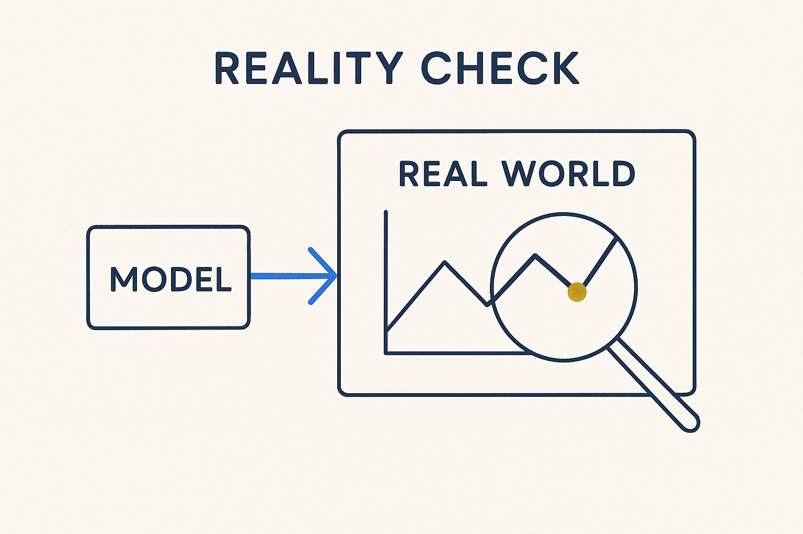

Test the model and the plan against the real world — the actual data, deliveries and behavior — not against the assumption you started with.

> Test the model and the plan against the real world — the actual data, deliveries and behavior — not against the assumption you started with.
A reality check is the habit of holding the model and the plan up against what is actually happening — the real data, the real deliveries, the real behavior of the systems — instead of against the tidy assumption you began with. Models drift from reality quietly: a source changes shape, a delivery arrives half-empty, a business rule turns out to have three exceptions no one mentioned. The check is what catches the drift before it becomes a wrong number in a report.
It is the pragmatic partner of thinking big. You can plan for every parallel process in theory, but the plan is only worth something if you keep confronting it with the facts on the ground. Run the query, look at the actual volumes, compare what was promised to what arrived. When the world disagrees with the model, the world wins — and the model changes.
This is where observability and plausibility checks earn their keep: they are reality checks made continuous and automatic. Reality check is the attitude; data observability and plausibility checks are how you run it at scale, so the model stays honest against the world it claims to describe.
Where it lives: the signature principle of Breakthrough Modeling — the model answers to reality, not the other way around.